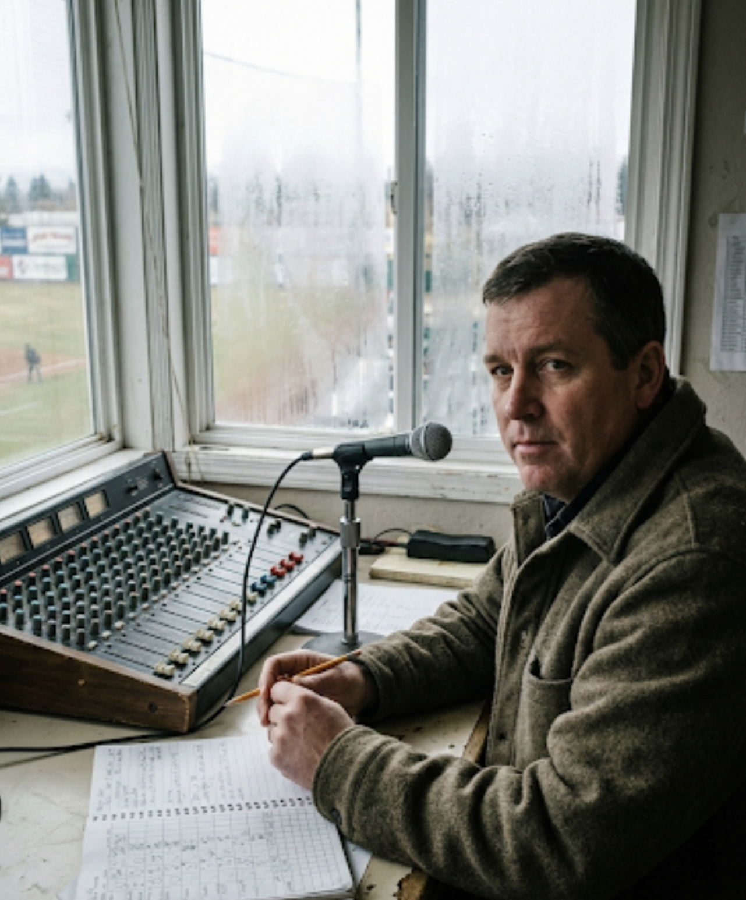
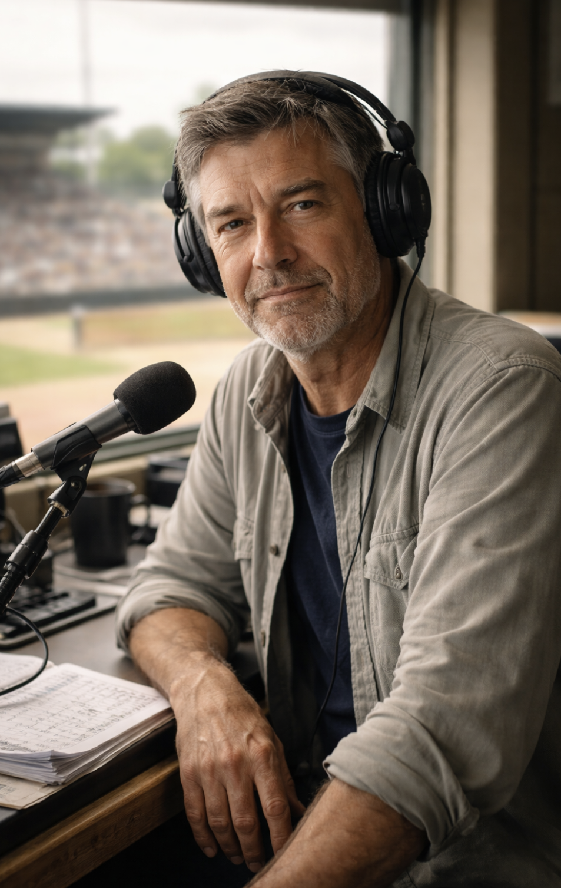
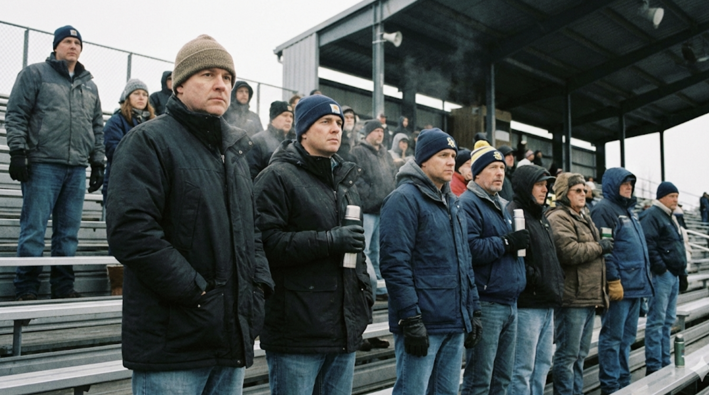

Spokane Alloys
Americas DivisionThe Club
Spokane keeps its baseball plainspoken and close to the ground: a night out by the river, a cold drink, a clean inning. The Alloys’ identity comes from place, not slogans—metalwork, rail noise, and the steady patience of people who don’t clap for nothing.
- Notes: River air / steel seating
- Atmosphere: Quiet until contact
- Ritual: “The Shift Change” horn
Ballpark

The Reduction Yards. A utilitarian park by the river—metal bleachers, narrow concourses, and a scoreboard that hums louder than it should. Early innings arrive with cold air and long shadows; late innings feel like working overtime.
Broadcast & Announcer

Gus Vogel
Vogel calls games like a work report—measured, clear, and stubbornly calm. If something big happens, he acknowledges it and moves on. The tone is radio-first: you can see the inning even with your eyes closed.

Ronan “Switch” Calder
Calder’s voice lives inside the park—echoing off steel, cutting through chatter, and landing on every name like a stamped label. He doesn’t hype. He confirms. When he says a number, it sounds official.
Mascot & Stands

Ingot
A hulking, human-worn suit built from “recycled smelter plating” (at least, that’s the story). The seams show. The paint chips. Ingot doesn’t dance much—he posts up near the bullpen like a foreman on break.

The Freeze Line
Coats in April. Gloves in May. The Freeze Line is famous for “quiet innings”—whole frames with almost no sound, then a sudden burst when a ball finds leather. It’s not polite. It’s focused.